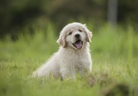

This site is about me and a look at the work I did in the Summer Immersion Program at GWC

What a good doggy
I love my dog, anything that occurs in a body of water (swimming, water polo, body surfing etc.)
living in the PNW, hiking, and watching playoff games. I strongly dislike tomatoes,
mushrooms, avacados, and whipped cream.